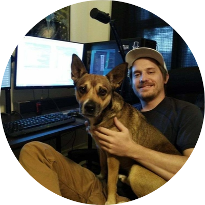

Experience
Information Technology Solutions
Oct 2018 - Present | Support Engineer > Support Engineer II
- Deployed Linux servers running Elasticsearch, MongoDB and Graylog for netflow logging and
reporting
on Cisco ASA and
Cisco Routers for our largest customer.
- Improved customer operational posture by automating backups, health checks/liveness probes and
patch management.
Automated email alerts for connectivity services.
- Administered ~15 small to medium sized business networks. Performed configuration of VLANs,
Access
Points, Sonicwall
Firewalls, VOIP, QoS, client SSL VPN with RADIUS/LDAP Authentication and L2L IPsec VPN tunnels
for
our multi state
clients.
- Extensive experience administering the Windows tech stack: Hyper-V, Replication, Group Policy,
Active Directory, Azure
AD, Office 365, DNS, DHCP, NPS, File/Print Servers, RDS terminal servers and SQL Servers.
- Automated manual tasks using Powershell such as AD Migrations, Azure user administration and
backups.
- Zero downtime email migrations to Office 365 from on premises and tenant to tenant.
- Setup centralized monitoring and alerting for client Sonicwall edge devices.
- Configured email alerting on backup and connectivity failures for MSA clients.
- Responsible for end to end ownership and resolution of customer support cases.
Networks Unlimited
Jan 2017 - Oct 2018 | Remote Support Specialist > Field Technician
- Provided remote support for approximately 100 clients.
- Performed Active Directory administration, Windows server related tasks, updates, troubleshot
services,
DHCP, DNS and
exposure to group policy for Windows Server.
- Extensive troubleshooting of 3rd party software.
- Extensive client side Windows troubleshooting.
- On-site work for residential & business customers: Set up new workstations, installed hardware
(switches, firewalls, PoE
adapters, wireless access points, networked printers). Configured SOPHOS firewalls & VPNs;
Created
routes for segregated
guest networks, WiFi network policies & configured VLANs. In-house computer repair, diagnosis &
hardware installations.
- Experience with Office 365 partner portal & administration. Utilized multiple software tools for
remote support and ticket
servicing: ConnectWise, GoToAssist, TeamViewer and Solarwinds MSP-Nable.
Mesa County School District
Jan 2008 – May 2009 | Website Administrator
- Basic HTML/CSS formatting and styling for Palisade High School web-page. Utilized Adobe
Photoshop
and various 3rd
party software for front-end development.
- Maintaining and updating the Web Page with relevant data, news and articles for students and
staff.